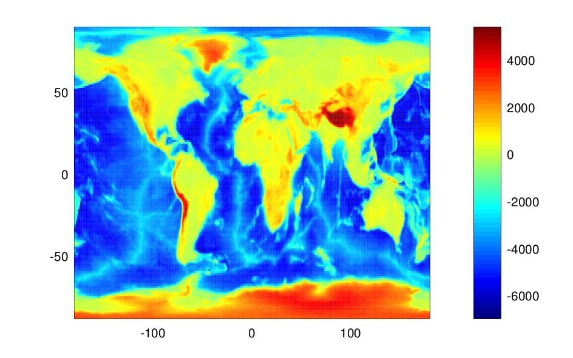
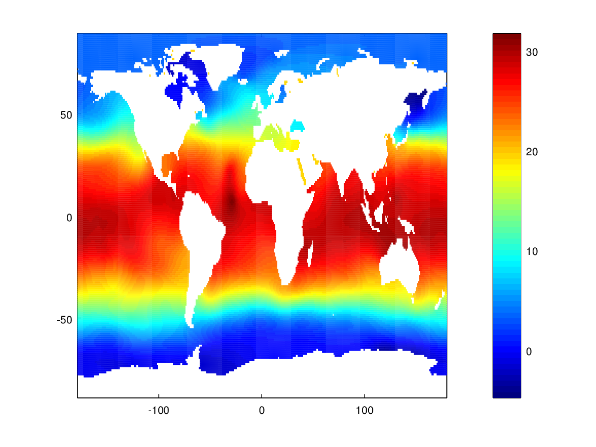

class: center, middle # divand Alexander Barth --- # Objective * --- # ARGO * Data file is `argo_data.mat` * Data can be loaded with: ```matlab load /path/to/argo_data.mat ``` where you have to use the appropriate file path and replace `/path/to`. * Use `whos` to list the loaded variables: ``` Attr Name Size Bytes Class ==== ==== ==== ===== ===== Tobs 1x1444 11552 double latobs 1x1444 11552 double lonobs 1x1444 11552 double timeobs 1x1444 11552 double ``` * lonobs: the longitude of the observations (in degrees North) * latobs: the latitude of the observations (in degrees East) * timeobs: the time of the observations (days, since January 0, 0000 i.e. 31 December 0001 BC UTC) * Tobs: surface temperature (in degrees Celsius), only 'good data' according to the quality flags --- * The time in matlab/octave can be manupilated with the commands `datenum`, `datevec`, and `datestr` (use e.g. `help datenum`). * What is the time range of the observations? ```matlab datestr(min(timeobs)) datestr(max(timeobs)) ``` --- * Fisualize the data <div style="text-align:center"> <img src="Fig/data_distrib1.png" width="700"> </div> -- ```matlab scatter(lonobs,latobs,5,Tobs,'filled') colorbar ``` --- * Force color-bar to 0 - 30 degree Celsius. <div style="text-align:center"> <img src="Fig/data_distrib2.png" width="700"> </div> -- ```matlab scatter(lonobs,latobs,5,Tobs,'filled') caxis([0 30]) % fix the color-bar range colorbar ``` --- # Outliers * There are some obvious outliers * How to remove these obvious outliers? Update `lonobs`, `latobs`, `timeobs` and `Tobs`. -- ```matlab keep = true(size(Tobs)); keep(Tobs > 50) = false; keep(Tobs < 20 & abs(latobs) < 20) = false; lonobs = lonobs(keep); latobs = latobs(keep); timeobs = timeobs(keep); Tobs = Tobs(keep); ``` --- * Visualize the dataset without the outliers <div style="text-align:center"> <img src="Fig/data_distrib_clean.png" width="700"> </div> --- # Bathymetry * We use the global GEBCO bathymetry * Reduced to a resolution to 1° * Load the bathymetry (file `diva_bath.nc`) and visualize it. * Hint: use `ncdisp` to list the variables names and `ncread` to load the variables (including longitude and latitude). --- * Visualize the bathymetry: <div style="text-align:center">  </div> -- ```matlab ncdisp('diva_bath.nc') bat = ncread('diva_bath.nc','bat'); lon = ncread('diva_bath.nc','lon'); lat = ncread('diva_bath.nc','lat'); [lon,lat] = ndgrid(lon,lat); pcolor(lon,lat,bat), shading flat,colorbar ``` --- # Land-sea mask * Create a mask: * 0 (false): shallower than 5 meters * 1 (true): deeper than 5 meters or equal to 5 meters <div style="text-align:center"> </div> -- ```matlab mask = bat <= -5; pcolor(lon,lat,double(mask)), shading flat, colorbar ``` --- # Local resolution of the grid * compute grid metric * `pm` and `pn` are in meters^-1 * `pm` inceases toward the poles and `pn` is just constant for a spherical mesh. <div style="text-align:center"> </div> ```matlab [pm,pn] = divand_metric(lon,lat); pcolor(lon,lat,pm), shading flat,colorbar ``` --- # Make the analysis * First we make a 2D analysis (ignoring the exact time) ```matlab % compute mean and anomalies Tmean = mean(Tobs); Tanom = Tobs - mean(Tobs); % correlation length (in meters) len = 3000e3; % signal-to-noise ratio lambda = 10; % make analysis Ta = divand(mask,{pm,pn},{lon,lat},{lonobs,latobs},... Tanom,len,lambda); ``` --- # The analysis * Anomalies <div style="text-align:center"> <img src="Fig/temp_anom.png" width="700"> </div> --- # Issue periodic boundaries <div style="text-align:center"> <img src="Fig/periodicity.png" width="700"> </div> --- * Add the mean back ```matlab Ta2 = Tam + Tmean; ``` <div style="text-align:center">  </div>